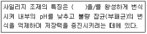
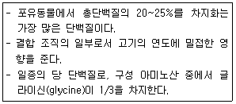

축산기사 (2019-09-21 기출문제)
1과목: 가축육종학
1. 선발지수를 산출할 때 이용하는 통계량이 아닌 것은?
- 각 형질 간의 표현형 공분산
- 각 형질 간의 표현형 상관계수
- 각 형질의 상대적 경제 가치
- 각 형질의 추정 생산 능력
(정답률: 47%)

2. 요크셔(Yorkshire)종과 폴라드차이나(Poland China)종간 1대 잡종 돼지의 모색은?
- 흑색
- 적색
- 갈색
- 백색
(정답률: 78%)
3. 총산란 수를 검정 개시 시 생존한 닭의 마리 수로 나눈 것은?
- 성성숙
- 산란율
- 산란지수(hen housed production)
- 일계산란율(hen day production)
(정답률: 73%)
4. 닭의 산육 능력 개량에 관계하는 형질로 가장 적절한 것은?
- 산란강도
- 동기휴산성
- 취소성
- 체형
(정답률: 50%)
5. 브로일러 생산을 위한 이상적인 종계의 교배체계는?
- 육용종(♀)×육용종(♂)
- 육용종(♀)×겸용종(♂)
- 겸용종(♀)×육용종(♂)
- 산란종(♀)×육용종(♂)
(정답률: 62%)
6. 젖소의 유지 생산량에 있어 A계통의 일반조합능력이 +10kg, B계통의 일반조합능력이 +20kg이고, 두 계통간의 교배에 의한 자손의 평균 능력이 +15kg이라면 두 계통간의 특정조합능력은?
- -15kg
- 0kg
- 10kg
- 15kg
(정답률: 50%)
7. 유전력이 높은 형질 개량에 가장 효과적인 선발방법은?
- 후대검정
- 가계선발
- 개체선발
- 혈통섬발
(정답률: 73%)
8. 한 가지 형질이 일정 기준의 개량량에 도달할 때까지 선발하고 그 다음에는 제2, 제3의 형질로 넘어가는 형태의 선발법은?
- 독립도태법
- 순차적선발법
- 선택지수법
- 혈통선발법
(정답률: 87%)
9. 한 개체에 대하여 특정 형질이 반복하여 발현되고 측정될 수 있다면 동일한 개체에 대해 측정된 기록 간에 상관관계가 형성되는데, 이에 해당하는 상관계수는?
- 육종가
- 유전력
- 반복력
- 유전상관
(정답률: 78%)
10. 집단 내 이형접합체의 비율을 높게 하는 교배 방법은?
- 계통교배
- 형매간교배
- 품종간교배
- 조손간교배
(정답률: 67%)
11. 돼지 생산에 있어 모돈의 잡종강세와 자돈의 잡종강세를 모두 이용할 수 있는 교배 방법은?
- 무작원 교배
- 순종교배
- 2품종 종료교배
- 3품종 종료교배
(정답률: 79%)
12. 동일한 품종 내에서 서로 다른 2개의 근교계통간 교배에 의하여 생산된 1대 잡종은?
- 톱교잡종(topcross)
- 이품종톱교잡종(topcrossbred)
- 동품종근친통간교잡종(incross)
- 이품종근친계통간교잡종(incrossbred)
(정답률: 62%)
13. 유우의 유전적 개량에서 유전 전달 경로 중 선발 강도가 가장 낮은 경로는?
- 암소-암소(dam to dam)
- 암소-수소(dam to sire)
- 수소-암소(sire to dam)
- 수소-수소(sire to sire)
(정답률: 66%)
14. 홀스타인종의 유량을 조사한 다음 어미소와 딸소가 함께 조사된 것들만 골라 어미소에 관한 딸소의 회귀계수(b)를 계산하였더니 0.15이었다. 이 결과로 유전력을 추정한다면 유량에 관한 유전력은?
- 0.15
- 0.25
- 0.30
- 0.45
(정답률: 76%)
15. 한우 집단의 3개월령 체중에 대한 집단의 평균이 50kg이고 선발군의 평균이 56kg일 때 선발차는?
- 6kg
- 56kg
- 62kg
- 106kg
(정답률: 86%)
16. 돼지의 경제형질에 해당하지 않는 것은?
- 유량
- 복당 산자수
- 이유 시 체중
- 이유 후 성장률
(정답률: 86%)
17. 변이의 크기를 측정하는 값이 아닌 것은?
- 평균
- 분산
- 범위
- 표준편차
(정답률: 63%)
18. 우모 발생 속도가 조우성인 닭과 만우성인 닭을 교배할 때, 우모 발생 속도의 유전 방식은?
- 종성유전
- 반성유전
- 융합유전
- 득성유전
(정답률: 67%)
19. 돼지에서 나타나는 잡종강세 현상이 아닌 것은?
- 잡종 종빈돈의 산자능력이 우수하다.
- 잡종 자돈의 이유 시 체중이 순종보다 가볍다.
- 잡종은 순종에 비하여 이유 후 성장이 빨라 일당증체량이 높다.
- 잡종 자돈의 사산비율이 낮고, 출생 시 활력이 강하여 이유 시까지의 생존율이 높다.
(정답률: 81%)
20. 암소를 개량하는 데 있어 개량 속도가 가장 빠를 것으로 예상되는 형질은?
- 산유량
- 유지량
- 유지율
- 수태당 종부 횟수
(정답률: 62%)
2과목: 가축번식생리학
21. 번식 장해를 일으키는 원인으로 옳지 않은 것은?
- 영양 장해
- 해부학적 결함
- 유전적 원인
- 젖소의 성질
(정답률: 80%)
22. 소에서 프로스타글란딘(prostaglandin)의 중요한 기능으로 옳은 것은?
- 황체 형성
- 임신 유지
- 자궁 근육 수축
- 프로게스테론(progesterone) 분비 촉진
(정답률: 59%)
23. 수소의 성성숙과 가장 관련성이 큰 호르몬은?
- 프로락틴(prolactin)
- 테스토스테론(testosterone)
- 프로게스테로롤(progesterone)
- 임마혈청 성선자극호르몬(PMSG)
(정답률: 81%)
24. 소의 수정란을 이식하는 기술에 관한 설명으로 옳지 않은 것은?
- 비외과적 방법으로 난자를 회수할 경우 배란 후 5~6일경에 채란하는 것이 좋다.
- 일반적으로 배반포까지 발달한 것보다 2~8세포기나 상실배를 이식하는 것이 좋다.
- 이식하고자 하는 수정란의 일령이 수란우의 배란 후 일수와 일치하지 않으면 임신율이 매우 저하된다.
- 수정란의 형태적 이상은 이식 후의 임신율을 저하시킨다.
(정답률: 75%)
25. 수정란 이식으로 얻을 수 있는 가장 큰 장점은?
- 단위 가격당 가축 생산 두수 증대
- 단위 시간당 가축 생산 두수 증대
- 종모축의 유전자 이용률 증대
- 우수 종빈축의 유전자 이용률 증대
(정답률: 68%)
26. 제1차 성숙분열이 완성되기 전에 배란이 일어나는 동물은?
- 개
- 소
- 닭
- 돼지
(정답률: 59%)
27. 수정란 이식에 대한 설명으로 옳지 않은 것은?
- 우수한 암가축의 자축을 많이 생산할 수 있다.
- 외국에서 도입 시 가축 대신 수정란을 수송하여 경비를 절감할 수 있다.
- 계획적인 가축 생산이 불가능하다.
- 세대 간격을 단축할 수 있다.
(정답률: 81%)
28. 젖소의 난소에 활체낭종이 발생하여 발정이 일어나지 않을 경우에 치료제로 가장 적합한 호르몬은?
- 임부융모성 성선자극호르몬(hCG)
- 프로게스테론(progesterone)
- 황체형성호르몬(LH)
- 프로스타글란틴(prostaglandin F2a)
(정답률: 62%)
29. 소의 발정 주기에서 평균적으로 배란이 일어나는 시기는?
- 발정 개시 후 10~11시간
- 발정 개시 후 22~24시간
- 발정 종료 후 10~11시간
- 발정 종류 후 22~24시간
(정답률: 62%)
30. 소의 잡종교배 시, 자손의 성성숙 도달일령은 어떻게 변하는가?
- 순종에 비하여 늦어진다.
- 순종에 비하여 빨라진다.
- 순종과 큰 차이가 없다.
- 번식계정과 온도에 따라 크게 달라진다.
(정답률: 73%)
31. 정자 발생 과정에서 감수분열이 일어나는 시기는?
- A1형 정원세포→A2형 정원세포
- A2형 정원세포→중간형 정원세포
- B형 정원세포→제1차 정모세포
- 제1차 정모세포→제2차 정모세포
(정답률: 74%)
32. 비유에 관한 설명으로 옳지 않은 것은?
- 프로락틴(prolactin)은 유선포의 분비상피 세포에 직접 작용한다.
- 비유 유지에 필요한 옥시토신(oxytocin)은 뇌하수체 전엽에서 분비된다.
- 비유동물의 부신을 제거하면 비유는 현저하게 감소된다.
- 갑상선 호르몬은 비유에 관여한다.
(정답률: 73%)
33. 정자에서 유전자(DNA)를 함유하고 있는 부위는?
- 두부(head)
- 경부(neck)
- 종부(tail)
- 중편부(middle piece)
(정답률: 79%)
34. 수정란 채취와 채란 과정에 대한 설명으로 옳지 않은 것은?
- 채란된 수정란은 발육 상태와 형태적 이상 여부를 검사하여야 한다.
- 수정란 채취는 외과적 방법으로만 실시한다.
- 다배란 처리를 위해 난포자극호르몬(FSH)을 사용할 수 있다.
- 임마혈청 성선자극호르몬(PMSG)을 공란우의 발정 주기 8~15일 사이에 주사한다.
(정답률: 80%)
35. 공란우의 수정란을 회수하는 외과적 방법으로 적합한 것은?
- 자궁관류법, 난관관류법
- 난관관류법, 전기자극법
- 전기자극법, 자궁관류법
- 난관관류법, 마사지법
(정답률: 67%)
36. 번식 장해와 관련된 설명으로 옳지 않은 것은?
- 난자가 노화함에 따라 수정력과 생존배를 만드는 능력이 저하될 수 있다.
- 저수태(repeat breeders)의 가장 큰 원인은 수정란 또는 배아의 조기 사망이다.
- 번식 장해란 생식을 영구적으로 할 수 없는 불임증만을 의미한다.
- 번식 장해는 부적절한 사양 관리로 인해 발생할 수 있다.
(정답률: 83%)
37. 뇌하수체 전엽에서 분비되는 호르몬은?
- 성장호르몬(GH)
- 성선자극호르몬 방출호르몬(GnRH)
- 프로락틴 억제인자(PRIF)
- 임부융모성 성선자극호르몬(hCG)
(정답률: 64%)
38. 성선자극호르몬(GTH)에 관한 설명으로 옳지 않은 것은?
- 난포자극호르몬(FSH)은 난소에서 난포발달을 촉진한다.
- 황체형성호르몬(LH)은 암가축의 배란을 유발하며, 황체 형성 기능을 갖고 있다.
- 성선에 작용하는 스테로이드(steroid)계 호르몬이다.
- 황체형성호르몬(LH)은 수가축의 고환에서 테스토스테론의 합성을 촉진한다.
(정답률: 65%)
39. 배반포 착상에 필요한 자궁 변화를 일으키며 자궁의 비대에 필요한 교원질을 공급해주는 기능을 하는 호르몬은?
- 프로락틴(prolactin)
- 소마토스타틴(somatostatin)
- 프로게스테론(progesterone)
- 성장호르몬(growth hormone)
(정답률: 67%)
40. 형태학적으로 궁부성 태반의 형태를 지닌 동물은?
- 돼지
- 토끼
- 개
- 소
(정답률: 68%)
3과목: 가축사양학
41. 필수 아미노산인 페닐알라닌을 대체할 수 있는 것은?
- 타이로신(tyrosine)
- 시스틴(cystine)
- 프롤린(proline)
- 알라닌(alaninr)
(정답률: 52%)
42. 수용성 비타민 중 쌀겨와 밀기울 같은 곡류부산물에 많이 있으며, 결핍 시 다발성 신경염인 각약증과 맥박 수 감소 증상 등이 나타나는 물질은?
- 티아민
- 리보플라빈
- 니코틴산
- 판토텐산
(정답률: 46%)
43. 일반 조성분에 포함되지 않는 것은?
- 조단백질
- 가용무질소물
- 조섬유
- 세포벽물질(CWC)
(정답률: 80%)
44. 다음 자료 중 조단백질 함량이 가장 높은 것은?
- 채종박
- 대두박
- 아마박
- 이자박
(정답률: 82%)
45. 펠렛(pellet) 사료에 관한 설명으로 옳지 않은 것은?
- 사료 섭취량을 감소시킨다.
- 사료 제조 과정 중 열에 약한 병원성 세균 및 독성 물질이 파괴된다.
- 사료 내 비타민의 이용성을 향상한다.
- 사료의 취급 및 수송이 용이해진다.
(정답률: 78%)
46. 강정 사양에 대한 설명으로 옳은 것은?
- 교배하기 전에 에너지 섭취량을 증가시켜 주는 것
- 교미 전에 휴식시키는 것
- 시장에 출하하기 직전에 비육하는 것
- 도살 직전에 급여 및 급수를 중단하는 것
(정답률: 73%)
47. 지용성 비타민에 해당하지 않는 것은?
- 비타민 A
- 비타민 B
- 비타민 D
- 비타민 E
(정답률: 81%)
48. 수용성 비타민이 체내에서 생합성되기 때문에 사료에 비타민을 필수적으로 공급해 줄 필요가 없는 동물은?
- 닭
- 소
- 개
- 돼지
(정답률: 76%)
49. 산란 전 예비사료(pre-lay diet)를 설명한 내용으로 옳은 것은?
- 칼슘 함량이 1%이며 모계의 산란율이 0.5%일 때부터 5%가 될 때까지 급여한다.
- 칼슘 함량이 1%이며, 모계의 산란율이 1%일 때부터 2%가 될 때까지 급여한다.
- 칼슘 함량이 2%이며, 모계의 산란율이 0.5%일 때부터 1%가 될 때까지 급여한다.
- 칼슘 함량이 2%이며, 모계의 산란율이 2%일 때부터 10%가 될 때까지 급여한다.
(정답률: 53%)
50. 위에서 주로 분비되는 단백질 분해 효소는?
- 펩신(pepsin)
- 아밀라아제(amylase)
- 트립신(trypsin)
- 카르복시펩티다아제(carboxypeptidase)
(정답률: 78%)
51. 소의 복부 왼쪽에 위치하고 있으며, 내부는 근대에 의하여 배낭, 복낭으로 나뉘고 2개의 후맹낭으로 이루어진 위는?
- 제1위
- 제2위
- 제3위
- 제4위
(정답률: 68%)
52. 가축이 탄수화물을 소화하는 데 관여하는 요소는?
- 리파아제(lipase)
- 프로테아제(protease)
- 아밀라아제(amylase)
- 펩티다아제(pepticdase)
(정답률: 75%)
53. 사료의 소화율을 간접 방법으로 평가할 때 외부 지시제(external marker)로 사용되는 물질은?
- 리그닌
- 크로모겐
- 실리카
- 산화크롬
(정답률: 64%)
54. 사료첨가제로 이용할 수 있는 생균제의 조건으로 적합하지 않은 것은?
- 장 내에 정착하여 생존하고 유해 세균과 경합하여 우점하여야 한다.
- 생산하고 쉽고 보존성이 길며, 품질관리가 잘 되어야 한다.
- 병원성이 있어야 한다.
- 위산이나 소화 효소에 대한 내성이 있고, 사료 가공 과정에서 파괴되지 않아야 한다.
(정답률: 82%)
55. 유기 축산에 대한 설명으로 옳지 않은 것은?
- 유기 사료의 공급은 필수적이다.
- 질병 관리는 치료보다는 예방 위주로 해야 한다.
- 가축 복지를 고려한 사양을 해야 하며 축종에 따른 적절한 사육 조건을 만족시켜야 한다.
- 항생제와 합성 항균제가 첨가된 사료를 급여하여야 한다.
(정답률: 78%)
56. 유지율이 3.5%인 우유 40kg을 유지율보정유(FCM)로 환산한 값은?
- 33kg
- 35kg
- 37kg
- 39kg
(정답률: 64%)
57. 70%의 총 TDN(가소화 영양분)을 함유한 대두박과, 84%의 TDN을 함유한 옥수수를 배합하여 TDN 함량이 78%인 사료를 만들고자 할 때, 대두박과 옥수수를 각각 몇 %씩 섞어야 하는가?
- 대두박:57.14%, 옥수수:42.86%
- 대두박:41.98%, 옥수수:58.02%
- 대두박:58.02%, 옥수수:41.98%
- 대두박:42.86%, 옥수수:57.14%
(정답률: 56%)
58. 포유자돈을 조기 이유시키는 주원인은?
- 이유 후 모돈의 재발정이 빨리 오기 때문
- 자돈의 사료비가 절약되기 때문
- 자돈의 관리가 쉬워지기 때문
- 자돈의 설사병을 방지할 수 있기 때문
(정답률: 77%)
59. 돼지의 체중 범위 중 단백질 요구량이 가장 적은 것은?
- 5~10kg
- 10~20kg
- 20~50kg
- 100~150kg
(정답률: 70%)
60. 육계의 체중이 1~2kg일 때 사료 요구율이 2.2라면, 체중이 1kg인 육계 100마리가 체중이 2kg까지 자라는 데 소요되는 사료의 양은?
- 100kg
- 150kg
- 200kg
- 220kg
(정답률: 78%)
4과목: 사료작물학 및 초지학
61. 다년생 복초 또는 재생을 하는 1년생 사료작물의 수확 후 재생을 위해 보유하여야 하는 주요 저장 양분은?
- 탄수화물
- 지방
- 비타민
- 무기율
(정답률: 70%)
62. 벼 대신 논에서 여름철 재배를 할 때 생산성 측면에서 가장 적합한 사료작물은?
- 율무
- 진주조
- 이탈리안 라이그라스
- 수수×수단 그라스 교잡종
(정답률: 64%)
63. 다음 설명의 ()안에 들어갈 용어로 알맞은 것은?

- 젖산균
- 초산균
- 낙산균
- 효로
(정답률: 72%)
64. 수단 그라스계 목초 종자를 파종한 사료작물포에 소를 방목시키려 한다. 청산 중독의 위험이 가장 큰 상황은?
- 비가 내린 뒤
- 질소비료 시비 직후
- 기온이 따뜻할 때
- 초장이 150cm 이상 자랐을 때
(정답률: 57%)
65. 우리나라 산지 토양의 특성으로 옳지 않은 것은?
- 산성 토양
- 유기물의 부족
- 높은 유효인산 함량
- 낮은 양이온 교환용량
(정답률: 63%)
66. 우리나라에서 실제로 이용할 수 없는 작부체계는?
- 여름작물:사료용 옥수수, 겨울작물:호밀
- 여름작물:수수×수단 그라스, 겨울작물:이탈리안 라이그라스
- 여름작물:자운영, 겨울작물:사료용 옥수수
- 여름작물:사료용 옥수수, 겨울작물:보리
(정답률: 60%)
67. 알팔파에 대한 설명으로 옳지 않은 것은?
- 뿌리의 버대가 좋고 근류를 갖는다.
- 줄기의 목질화가 심하고 건조에 약하다.
- 잎이 부드럽고 기호성이 좋다.
- 자색과 황색의 꽃을 피운다.
(정답률: 64%)
68. 초기 조성 시 불경운초지 개량이 경운초지 개량에 비해서 유리한 점이 아닌 것은?
- 조성 시 파종 비용이 적게 든다.
- 초지의 목양력 증가가 빠르다.
- 토양 침식 위험이 작고 토양 유실량이 적다.
- 1년생 잡초의 침입을 줄여 준다.
(정답률: 50%)
69. 종자 생산을 위한 수정이 트랩핑(tripping)현상에 의해 이루어지는 초종은?
- 레드 클로버
- 매듭풀
- 라디노 클로버
- 알팔파
(정답률: 59%)
70. 다년생 화본과 및 다년생 콩과(두과) 작물로 옳게 짝지어진 것은?
- 톨페스큐, 매듭풀
- 수단 그라스, 자운영
- 오차드 그라스, 알팔파
- 이탈리안 라이그라스, 스위트 클로버(Hubam종)
(정답률: 59%)
71. 중국에서 비래하는 해충으로 비래성충의 발생최성기는 5월 하순~6월 상순이며, 잎을 갉아 먹고 줄기만 남겨 화본과에 큰 피해를 주는 해충은?
- 애멸구
- 검정풍뎅이
- 멸강나방
- 진딧물
(정답률: 70%)
72. 콩과(두과) 사료 작물들의 근류균주들이 상호 접종될 수 있는 조합은?
- 알팔파-헤어리 베치
- 화이트 클로버-청예대두
- 알팔파-스위트 클로버
- 강낭콩-루핀
(정답률: 52%)
73. 십자화과로 분류되는 초종은?
- 수수
- 호밀
- 유채
- 화이트 클로버
(정답률: 74%)
74. 제초지 작물 중 건초용으로 적합한 사료 작물은?
- 티모시, 이탈리안 라이그라스
- 켄터키 블루그라스, 달리스 그라스
- 페레니얼 라이그라스, 콤먼 베치(common vetch)
- 화이트 클로버, 메도우 페스큐(meadow fescue)
(정답률: 65%)
75. 초생재배에 대한 설명으로 가장 알맞은 것은?
- 다른 작물이 자랄 수 없는 곳에 녹화사업만을 위해 재배되는 것을 말한다.
- 과수원, 뽕나무밭 등의 공간에 목초 또는 사료 작물을 재배하는 것을 말한다.
- 늦가을 녹사료의 공급을 위해 파종된 초지에서 재배하는 것을 말한다.
- 사료 작물과 목초만을 교대로 재배하는 것을 말한다.
(정답률: 54%)
76. 윤환방목에 대한 설명으로 옳지 않은 것은?
- 유목기간에 초세유지가 가능하다.
- 윤환방목지의 풀을 고르게 이용하는 것이 가능하다.
- 선택채식의 기회가 적어 초지의 황폐화를 초래하는 경우가 적다.
- 목책시설 비용과 가축관리에 필요한 노동력이 연속방목보다 적게 소요된다.
(정답률: 58%)
77. 목초를 혼파 재배할 때 유리한 점이 아닌 것은?
- 목초 관리가 쉽고 초종간 경합이 줄어든다.
- 콩과(두과)와 화본과 혼파 시 균형 있는 양분의 풀을 가축에게 공급할 수 있다.
- 상ㆍ하번초 혼파 시 초종 간의 공간 이용에 있어서 경합을 줄일 수 있다.
- 토양 중의 양분을 효율적으로 이용할 수 있다.
(정답률: 70%)
78. 옥수수를 수확하여 사일리지를 조제하려고 건물 함량을 측정하니 24%로 너무 낮아 곡분(건물률 90%)을 첨가하여 건물 햠랑을 30%로 만들어 사일리지를 조제하려고 한다. 건물 함량이 24%인 옥수수가 1톤이라면 건물 함량이 90%인 곡분의 첨가량은 얼마인가?
- 60kg
- 100kg
- 120kg
- 240kg
(정답률: 47%)
79. 옥수수 사일리지 조제 방법 중 가장 좋은 조건은?
- 수분함량을 40%, pH를 4.5로 맞추어 밀폐한다.
- 수분함량을 40%, pH를 6.5로 맞추어 공기가 잘 통하게 한다.
- 수분함량을 70%, pH를 4.5로 맞추어 밀폐한다.
- 수분함량을 70%, pH를 6.5로 맞추어 공기가 잘 통하게 한다.
(정답률: 66%)
80. 사료 작물 선택 시 고려하여야 할 사항이 아닌 것은?
- 기호성
- 건물수량
- 사료 가치
- 부숙도
(정답률: 68%)
5과목: 축산경영학 및 축산물가공학
81. 가경력(arability)이 있는 토지에 관한 설명으로 옳지 않은 것은?
- 배수가 잘되는 토지
- 보수력이 강한 토지
- 암반과 자갈이 많은 토지
- 경토가 깊고 심토가 좋은 토지
(정답률: 76%)
82. 생산여건은 변하지 않았는데 축산물 가격이 올라가고 사료 가격은 내려가게 되면 어떻게 되는가?
- 총(조)수입은 줄어들고 경영비는 늘어난다.
- 총(조)수입은 늘어나고 경영비는 줄어든다.
- 총(조)수입과 경영비가 다 같이 줄어든다.
- 총(조)수입과 경영비가 다 같이 늘어난다.
(정답률: 79%)
83. 경영계획에 대한 진단 중 이익계획에 대한 진단에 해당되는 것은?
- 손익분기점 산출상의 문제점
- 경영자본의 연도별 조달계획의 타당성
- 총투자액 중 시설투자의 비율과 타당성
- 장기계획과 단기계획 상호간 조화의 타당성
(정답률: 57%)
84. 노동에 대한 대가가 농업노임이 아니라 경영성과로 얻어지는 소득의 원친이 되는 노동력은?
- 자가 노동력
- 연고 노동력
- 일고 노동력
- 청부 노동력
(정답률: 72%)
85. 다음 중 고정자본재에 해당하는 것은?
- 사료
- 산란계
- 비육돈
- 브로일러
(정답률: 66%)
86. 양계경영의 주요 기술지표가 아닌 것은?
- 산란율
- 사육 마리 수
- 육성률
- 난중
(정답률: 41%)
87. 유사비에 관한 설명으로 옳은 것은?
- 유대에 대한 사료비의 비율
- 사료비에 대한 우유생산량의 비율
- 유내에 대한 섭취조사료량의 비율
- 우유생산량에 대한 사료비의 비율
(정답률: 51%)
88. 육계에 대한 사료급여량(X)과 출하 시의 체중(Y)과의 관계가 Y=1+0.5X-0.25X2이고, 육계용 사료가격(RX)이 kg당 250원, 육계출하가격(PY)이 kg당 1000원이라면 수익이 최대가 되는 사료투입수준은?
- 0.5kg
- 1.0kg
- 1.5kg
- 2.0kg
(정답률: 38%)
89. 쇠고기의 수매단계 판매에서 의무적으로 등급표시를 해야 하는 부위가 아닌 것은?
- 양지
- 우둔
- 갈비
- 채끝
(정답률: 65%)
90. 축산경영 성과분석의 지표가 될 수 없는 것은?
- 생산비율
- 축산순수익
- 자기자본이자
- 가족노동보수
(정답률: 33%)
91. 염지액 인젝션 과정에서 주의 사항으로 옳지 않은 것은?
- 염지액 온도는 원료육의 온도와 동일하게 4~8℃로 유지한다.
- 육속에 공기 혼입이 되지 않도록 염지액의 기포를 제거한다.
- 염지액 투입량은 원료육 중량의 40% 정도가 적당하다.
- 원하는 양의 염지액이 투입되도록 투입전과 후의 중량을 측정하여 투입한다.
(정답률: 72%)
92. 골격근에 관한 설명으로 옳지 않은 것은?
- 골격, 혈관벽, 소화기관이나 생식기관에 많이 함유되어 있다.
- 수의근이며 근육의 수축과 이완 등 동물의 운동을 수행하는 기관이다.
- 골격근 조직은 근섬유와 결합조직, 혈관, 신경섬유, 지방세포 및 임파절로 구성되어 있다.
- 골격근은 근육 내에 에너지원을 저장하고 있기 때문에 식품으로서 가치가 매우 높다.
(정답률: 51%)
93. 자축의 도축 후에 나타나는 근육 내 사후 변화가 아닌 것은?
- pH 저하
- 젖산 생성
- ATP 생성
- 사후 경직
(정답률: 73%)
94. HACCP에서 식융가공품 가공공정 중 ‘제조공정-위해요인-방지책’의 연결이 잘못된 것은?
- 원료육처리-병원성 미생물-미생물 검사
- 염지-이물질-염지액의 오염 방지
- 포장과 보존-물리적 위해요인-금속탐지기 이용
- 세절-화학 물질-제품 보증서 확인
(정답률: 67%)
95. 아이스크림의 원료가 되는 성분이 아닌 것은?
- 지방
- 무지유고형분
- 유화제
- 알부민
(정답률: 65%)
96. 다음 설명에 해당하는 단백질은?

- 레티큘린(reticulin)
- 콜라겐(collagen)
- 축적지방(depot fat)
- 근섬유(muscle fiber)
(정답률: 65%)
97. 독소형 식중독균으로 옳은 것은?
- staphylococcus aureus
- Escherlchia coli
- Campylobacter
- Yersinia enterocolitica
(정답률: 53%)
98. 근육의 연도를 증진시키는 방법으로 옳지 않은 것은?
- 저온 숙성
- 온도체 가공
- 고온 숙성
- 전기자극법
(정답률: 48%)
99. 자연치즈 제조 시 단단한 커드 발생의 원인이 아닌 것은?
- 높은 칼슘 농도
- 낮은 pH
- 단백질 함량을 과도하게 높인 표준화
- 응유 과정 중 낮은 벳트 온도
(정답률: 55%)
100. 우유의 건강증진효과로 옳지 않은 것은?
- 우유를 섭취하면 장에 젖산균의 활동이 증진되어 무기질 흡수가 촉진된다.
- 우유 내 비타민A는 피부나 점막을 건강하게 유지시켜 준다.
- 식후 우유 섭취는 N-니트로소아민을 활성화시켜 암세포의 성장을 억제한다.
- 우유의 칼슘은 치아의 인산칼슘 형성에 도움을 주어 충지 예방에 기여한다.
(정답률: 60%)